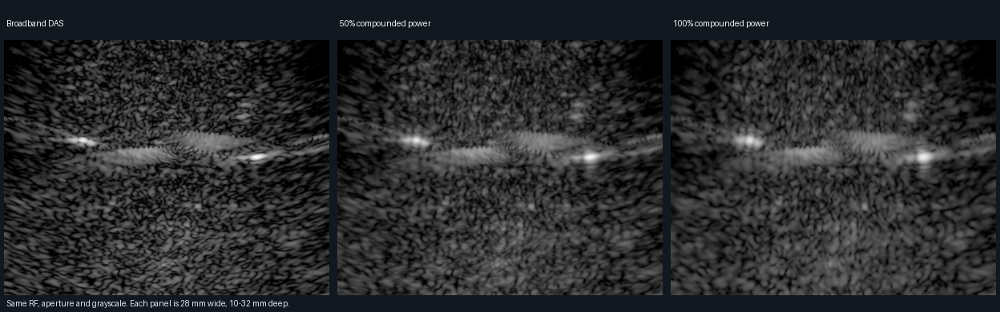

Improving the CH6-2 image with the existing probe and receiver
24 November 2026. Measurements use archived RF from the central 48 elements with elements 25 and 46 excluded. The existing host supports single-cycle and two-cycle bursts, chirps, Golay pairs, neighbor receive, three-position receive, a stable 24-shot aperture, coherence weighting and three-band frequency compounding. The following experiments use the same samples to compare reconstruction choices. Acquisition speed estimates assume the existing multiplexed single-channel signal path. Acquisition modes
Capture each neighboring path once
The existing three-position sequence spends separate firings acquiring A→B and B→A. On a stationary target the acoustic path is reciprocal. Electronic gain, timing, noise and motion can break the equivalence in measured RF. Across two 48-frame hardware captures, in the wire gate, the typical zero-lag correlation was about 0.999 for reciprocal paths, 0.44 for an off-diagonal and its own center shot, and 0.01 for a distant pair. Timing and amplitude agreement here are specific to these flat-trim recordings. Reciprocity in synthetic aperture acquisition
We replayed all 96 valid frames twice, keeping either the lower- or higher-numbered transmitter of each neighboring pair. We substituted the retained trace in both geometric slots to preserve total weighting. Across 192 comparisons the largest lateral wire-width change was 0.0078 mm and the largest far off-axis 95th-percentile level change was 0.33 dB. Gelatin envelope correlation stayed above 0.9989 against the full acquisition. The reference and test have shared self paths, so this correlation measures the effect of dropping the duplicate directions. Measurements · Replay script
The present walk fires 142 shots. Forty-six healthy self echoes and 43 distinct healthy adjacent pairs require 89, saving 37% of shots and giving an ideal shot-limited 1.60× speed factor. For context, the existing three-position scan measured about 35 sweeps/s versus 103 for a same-gate monostatic chirp, while improving far off-axis wire contrast by about 13 dB. The proposed 89-shot scan needs a firmware schedule, path tags, host assembly and weight handling. A new phantom capture would establish switching behavior, noise and actual rate, followed by a moving-phantom comparison of edge continuity. The shorter span is the potential image-quality benefit for motion. Existing hardware comparison · Current sequencer
Use partial compounding for a quieter gelatin image
Frequency compounding averages over partly independent speckle patterns at different frequencies. Restricting each band lengthens the axial response. In replay we mixed broadband delay-and-sum power with the sum of the three detected band powers before log compression. The weights in the first column give the compounded fraction. Coherence weighting was off for all rows. The ordinary broadband control agreed with the archived GPU magnitude to 0.049% relative RMS. Experimental compounding trade-off · Method and region definitions
| Three-band fraction | Axial −6 dB width
left / right, mm | Lateral −6 dB width
left / right, mm | Gelatin envelope SD / mean
shallow / deep |
|---|
| 0% | 0.298 / 0.287 | 0.561 / 0.763 | 0.567 / 0.584 |
| 25% | 0.328 / 0.320 | 0.562 / 0.771 | 0.497 / 0.494 |
| 50% | 0.380 / 0.371 | 0.564 / 0.780 | 0.455 / 0.442 |
| 100% | 0.537 / 0.533 | 0.575 / 0.812 | 0.419 / 0.390 |
The 25% setting replicated on the middle frame of an independent one-wire acquisition. Its axial width went from 0.284 to 0.310 mm, lateral width from 0.466 to 0.469 mm, and deep gelatin SD/mean from 0.528 to 0.458. Reduced grain contrast can make a boundary easier to see. In the two-wire image the deep lateral speckle correlation width actually grew from 0.377 to 0.407 mm. The existing host exposes the two endpoints. Intermediate strengths are replay prototypes. Results

Two-wire replay at equal physical scale and grayscale. Compare the axial thickness of the two dots at full compounding.
Preserve weak scatter when weighting the aperture
We adapted dual apodization with cross-correlation to sequential monostatic data by summing each focused trace twice, once with uniform weights and once with a Hann taper. Agreement between the two RF sums weights the uniform image. On the two-wire recording, apparent widths were 0.44 and 0.66 mm, versus 0.51 and 0.70 mm with the existing coherence exponent of 0.15. Uniform–Hann preserved more gelatin signal and admitted roughly 3 dB more wire-adjacent energy. On an independent single-wire capture, the width advantage reversed in all three tested frames. Uniform–Hann remained a texture-preserving option, with central gelatin medians 0.7–2.1 dB below ordinary delay-and-sum versus about 5 dB below for the existing coherence weighting. A more aggressive alternating-aperture variant suppressed median two-wire gelatin echoes by 29–57 dB. Those medians characterize displayed scatter amplitude. They cannot identify how much of it comes from husk, reverberation or noise. Seo and Yen · Two-wire measurements · Single-wire check · Equal-gain images
We also tested wider acceptance for low frequencies and narrower acceptance for high frequencies, summing the bands coherently. A 30°/22°/16° low/mid/high split changed wire widths from 0.561/0.763 to 0.555/0.751 mm and raised left-side background by 1.0 dB. The small change gives this particular three-band approximation lower priority. The published frequency-dependent F-number method uses a more detailed aperture model. Authors’ method and synthetic-aperture implementation · Aperture trials
Shorten the cardiac sweep before adding motion correction
The 208-frame apical recording used 48 sequential shots spanning a nominal 15.3 ms, with a mean host arrival interval of 19.35 ms. We tested whether axial RF displacement measured in one frame pair predicted the next pair. At 55 mm, 20% of the tested element/triplet combinations passed a nonzero-lag and correlation screen. Their median next-pair correlation increased from 0.248 to 0.348. At 85, 120 and 145 mm the predicted shift reduced median correlation in the qualifying subsets. The frames share a middle observation, and the clip has no independent motion reference. These measurements support tracking confidence as a prerequisite for correction. A motion-compensation experiment would use short interleaved reference acquisitions, per-shot timing and local displacement quality checks. For current use, the stable 24-shot aperture and one-sweep averaging are the available starting point. Cardiac replay · Acquisition timing · Gammelmark and Jensen
Calibration and deeper echoes
The live delay model uses path length plus a common time offset. For older captures with a programmed non-flat transmit trim, reconstruction can apply the recorded transmitter delay once, with a flag for previously corrected files. The prior 0.99→0.50 mm left-wire comparison selected peaks at different lateral positions, −14.1 and about −7.2 mm. The defensible same-target comparison on the timing-corrected frame is 0.67/0.93 mm with baseline ordinary delay-and-sum versus 0.56/0.76 mm after tuning. Radius, pitch, sound speed and time-zero estimated together on this shallow frame should be checked on a second depth before using them as a dimensional calibration. Earlier target locations · Corrected targets · Current delay model
For coded captures, the host uses the saved electrical command as its pulse-compression reference. A further experiment is to measure the system’s acoustic pulse-echo response on a wire, fit a noise-regularized compression filter at one depth and compare axial width, range sidelobes and noise on another. The archived cardiac chirp had most of its deep excess received power around 2–4 MHz. Earlier idealized inverse filters gave no clear improvement there. A measured reference is a better reason to revisit compression than a longer chirp alone. Earlier chirp experiments · Misaridis and Jensen
Live performance of the proposed methods still needs a physical acquisition. The results above characterize finite-wire response, stationary gelatin texture and inter-frame RF predictability. A known low-contrast target at depth would allow a separate test of detectability using distribution overlap alongside wire width. Generalized contrast-to-noise ratio